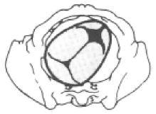
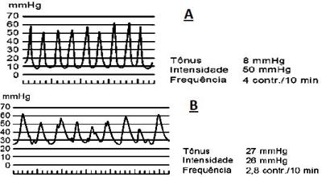
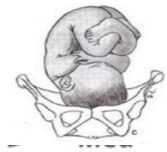
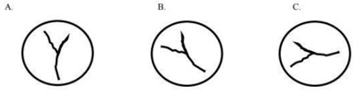

Questão 1 · Fase latente · 4000184796Pode-se afirmar, em relação ao trabalho de parto normal, que:
A o período expulsivo se encerra com a saída do feto e placenta.
B o primeiro período do parto tem início com a dilatação do colo em 1cm.
C a fase latente dura em média 20 horas nas primíparas e 14 horas nas multíparas.
D a amniorrexe é prematura quando se dá no início do trabalho de parto.
Questão 2 · Estática f etal · Bacia obstétrica e pelvimetria · Obstetrícia · 4000183616Secundigesta em trabalho de parto, com 7 cm de dilatação e bolsa rota. Na palpação abdominal, o obstetra encontra o polo cefálico na escavação, apresentação etida e conclui que se trata de ODT. Considerando a pelve como um relógio, no toque vaginal espera-se observar o
A 9h.
B 12h.
C 8h.
D 3h.
E 6h.
Questão 3 · Obstetrícia · Mecanismo de parto · 4000183605Em relação ao mecanismo de parto é correto afirmar que:
A Na apresentação cefálica fletida o ponto de referência é o bregma, com o símbolo B.
B Na apresentação pélvica a linha de orientação é o dorso e o ponto de referência é o quadril.
C A descida fetal é mais acelerada na fase de desaceleração da dilatação cervical.
D A fase latente do parto é representada pela dilatação cervical de 1,2 cm/hora a 1,5 cm/hora.
E A posição fetal representa a parte fetal que ocupa o estreito superior da pelve materna.
Questão 4 · Obstetrícia · Terceiro periodo dequitação · 4000183602No terceiro período de parto,
A a conduta ativa envolve o uso rotineiro de substâncias uterotônicas.
B deve-se aguardar 5 minutos após o nascimento para a secção do cordão umbilical.
C deve-se administrar ocitocina somente após pinçar e seccionar o cordão.
D a conduta ativa está mais associada a hemorragia do que a conduta fisiológica.
E 1 hora após o nascimento é considerado terceiro período prolongado.
Questão 5 · Períodos do trabalho de parto · Obstetrícia · 4000177457Sabe-se que o mecanismo de parto é o conjunto de movimentos ativos e, principalmente, passivos do feto durante sua passagem pelo canal vaginal. A estática in uencia diretamente em como se dará esse fenômeno e, consequentemente, seu desfecho. Por isso, é imprescindível que o médico obstetra e o generalista conheçam esse mecanismo. No trabalho de parto, na apresentação
A pélvica incompleta, também denominada pelvipodálica, as coxas e as pernas estão fletidas.
B defletida de 2° grau, o ponto de referência fetal é a glabela.
C bregmática, a linha de orientação é a sutura metópica.
D facial, o ponto de referência fetal é o bregma.
Questão 6 · Primeiro período f ase de dilatação · Fases clínicas do parto · Fase ativa · 4000170628No que se refere à assistência ao trabalho de parto, assinale a alternativa correta.
A Durante o 1.° período, o exame de toque vaginal deve ser realizado a cada duas horas no trabalho de parto que evolui fisiologicamente.
B Durante o 1.° período, o exame de toque vaginal deve ser realizado a cada 4 horas no trabalho de parto que evolui fisiologicamente.
C Durante o 1.° período, o exame de toque vaginal deve ser realizado a cada hora no trabalho de parto que evolui fisiologicamente.
D Durante o 2.° período, o exame de toque vaginal deve ser realizado a cada 15 minutos no trabalho de parto que evolui fisiologicamente.
E Durante o 2.° período, o exame de toque vaginal deve ser realizado a cada 30 minutos no trabalho de parto que evolui fisiologicamente.
Questão 7 · Obstetrícia · Mecanismo de parto · 4000170627A respeito do mecanismo de parto, assinale a alternativa correta.
A As apresentações pélvicas têm frequência de 5,6%.
B As apresentações cefálicas defletidas têm frequência de 4%.
C Nas apresentações cefálicas defletidas de 2º grau, a linha de orientação é a sutura sagitometópica.
D Nas apresentações cefálicas fletidas, em variedade de posição posterior direita, a rotação interna é de 90°.
E A rotação interna é sempre de 45° nas apresentações pélvicas.
Questão 8 · Segundo período período expulsivo · Obstetrícia · 4000165642Parturiente de 38 anos de idade, secundigesta com um parto normal há 10 anos, 39 semanas e 2 dias de gestação encontra- se em trabalho de parto há 5 horas, com analgesia de parto há uma hora. Refere pré-natal sem intercorrências, última ultrassonogra a obstétrica foi com 35 semanas de gestação, com feto único em apresentação cefálica, dorso à esquerda, peso fetal estimado de 3180g (percentil 95 de Hadlock), placenta fúndica, e índice de líquido amniótico de 18. No momento do parto observa-se a seguinte situação: Qual é a primeira manobra obstétrica que deve ser realizada nesse momento?

A Anteriorizar o dorso fetal.
B Fraturar a clavícula fetal.
C Hiperfletir as coxas da parturiente.
D Realizar manobra de Zavanelli.
Questão 9 · Obstetrícia · 4000147359Você está assistindo a uma parturiente que iniciou o período expulsivo há cerca de 15 minutos. Identi ca durante o exame físico que o feto está em ODT. Considerando a nomenclatura obstétrica, as letras O e D permitem determinar que aspectos das relações útero-fetais, respectivamente?
A Posição fetal e atitude fetal.
B Situação fetal e apresentação fetal.
C Apresentação fetal e posição fetal.
D Atitude fetal e apresentação fetal.
E Posição fetal e situação fetal.
Revisar: possível letra faltando em enunciado
Questão 10 · Estática f etal · Obstetrícia · Parto · 4000145930Assinale a alternativa que apresenta, correta e respectivamente, a variedade de posição fetal, o ponto de referência fetal, o diâmetro de insinuação e seu diâmetro em centímetros.
A apresentação cefálica defletida de 1.° grau, bregma e diâmetro occipto-frontal com 12 cm
B apresentação cefálica defletida de 2.° grau, naso e diâmetro occipto-mentoniano com 12 cm
C apresentação cefálica defletida de 3.° grau, mento e diâmetro suboccipto-mentoniano com 9,5 cm
D apresentação cefálica fletida, occipício e diâmetro occipto-bregmático com 9,5 cm
E apresentação cefálica fletida, occipício e diâmetro suboccipto-bregmático com 12 cm
Questão 11 · Def inição · Obstetrícia · Mecanismo de parto · 4000145708O tipo mais comum de pelve feminina é a ginecoide, e a apresentação fetal mais comum no trabalho de parto é a cefálica. Sobre o mecanismo do parto nessas condições, é correto afirmar que,
A na palpação abdominal, se o feto está em situação longitudinal, a cabeça fetal está móvel, acima do estreito superior, podese dizer que a mesma está insinuada.
B quando um dos parietais desce pelo canal de parto antes do outro, mesmo que discreto e transitório, o assinclitismo configura um trabalho de parto distócico.
C após a deflexão da cabeça, na variedade de posição occipito esquerda anterior, é mais provável que o movimento de restituição seja ¼ de circunferência. na descida do polo cefálico, se a cabeça está fletida, o menor diâmetro possível para a os movimentos de acomodação da apresentação fetal é o occipitofrontal.
D na descida do polo cefálico, se a cabeça está fletida, o menor diâmetro possível para a os movimentos de acomodação da apresentação fetal é o occipitofrontal.
E no desprendimento dos ombros, o diâmetro biacromial deve estar posicionado sob a arcada púbica de tal forma que primeiro seja liberado o ombro posterior.
Questão 12 · Puerpério · Obstetrícia · Terceiro periodo dequitação · 4000144696Gestante de 40 semanas deu à luz seu segundo lho. Passados 40 minutos do parto vaginal, a dequitação ainda não ocorreu. A melhor conduta neste momento é realizar:
A anticoagulação profilática e curagem uterina.
B tração vigorosa do cordãoe infusão de ocitocina.
C anestesia por bloqueio espinhal e extração manual da placenta.
D conduta expectante até pelo menos 1 hora do nascimento.
Questão 13 · Fases clínicas do parto · Períodos do trabalho de parto · Obstetrícia · 4000144459As fases clínicas do parto são processos siológicos e dividem-se em quatro períodos. Fazem parte desses períodos as seguintes fases, exceto:
A Fase de contratilidade.
B Fase de dilatação.
C Fase de expulsão.
D Fase de secundamento.
Questão 14 · Tempos da apresentação cef álica · Obstetrícia · Parto · 4000144264Secundigesta (1 parto vaginal prévio), com 39 semanas, chega para avaliação em trabalho de parto na fase ativa da dilatação. O toque vaginal revela colo centrado, curto, dilatado 7 cm, feto em ODP (occipito direita posterior), em -1, bolsa íntegra. Escolha a alternativa que contém tempos do mecanismo de parto mais provável, nesse caso.
A Rotação interna de 135 graus no sentido horário, hipomóclio por deflexão e rotação externa anti-horária.
B Rotação interna de 225 graus no sentido anti-horário, hipomóclio em deflexão e rotação externa-horária.
C Insinuação por flexão, rotação interna de 45 graus no sentido anti-horário e hipomóclio por deflexão.
D Insinuação por assinclitismo, rotação interna de 135 graus no sentido-horário e hipomóclio em flexão.
Questão 15 · Obstetrícia · Parto · Mecanismo de parto · 4000142783Durante o trabalho de parto o feto faz o movimento de rotação interna, assumindo diferentes variedades de posição. Marque a assertiva

A OEA.
B ODA.
C ODP.
D OEP.
E ODT.
Questão 16 · Obstetrícia · Parto · Mecanismo de parto · 4000142504Durante o trabalho de parto, uma paciente está apresentando parada da descida. Ao toque, observa-se apresentação cefálica com a sutura sagital transversa e mais perto da sín se do que do promontório sacral. Qual é o nome dessa condição?
A Assinclitismo posterior.
B Assinclitismo anterior.
C Distócia funcional.
D Rotação interna.
E Rotação externa.
Questão 17 · Fases clínicas do parto · 4000141315Clinicamente, o parto propriamente dito é dividido em quatro fases ou estágios principais, sendo elas: dilatação, expulsão, estágio da placenta e período de Greenberg. Considerando os estágios do parto e suas particularidades, é CORRETO afirmar:
A No período de Greenberg, há possibilidades de grandes hemorragias. Estende-se pelas primeiras 4 horas após o parto.
B A fase da dilatação inicia-se pela dilatação progressiva do colo uterino e divide-se em fase passiva e ativa, sendo esta última caracterizada por um aumento na dilatação cervical.
C A fase da placenta começa a partir da dilatação e é encerrada pela expulsão da placenta e das membranas fetais.
D O parto do feto se constitui na expulsão do bebê, processo iniciado a partir da dilatação incompleta do colo uterino.
Questão 18 · Rotação externa · 4000138363Versão cefálica externa é um procedimento que consiste na transformação de apresentação pélvica em cefálica mediante suave manipulação no abdome materno, sendo assim, assinale a alternativa incorreta sobre o assunto:
A É realizada preferencialmente com 37 semanas de gestação.
B Deve ser realizada em ambiente hospitalar.
C O uso de anestesia geral está contraindicado.
D Cesárea prévia é uma contraindicação absoluta para a versão cefálica externa.
E Obesidade materna é uma contraindicação relativa para a versão cefálica externa.
Questão 19 · Desprendimento espáduas · 4000138039Gestante em período expulsivo, apresenta o sinal da tartaruga com consequente di culdade para a extração fetal. Considerando esse contexto, qual a primeira manobra a serrealizada nesta distócia?
A Deventer- Muller.
B Zavanelli
C McRoberts
D Mauriceau
E Bracht.
Questão 20 · Fase ativa · O trabalho de parto e o parto · 4000137976Gestante, 27 anos de idade, primigesta, encontra-se com 34 semanas de gestação. Em consulta de pré-natal de rotina, quer se preparar para o trabalho de parto e conhecer detalhes da assistência ao parto de baixo risco. Deve-se informar, corretamente, que.
A se recomenda massagem perineal durante o segundo período do parto.
B se considera trabalho de parto estabelecido quando a dilatação cervical é de pelo menos 4 a 6 cm, acompanhada de contrações uterinas regulares.
C se considera terceiro período do parto prolongado após decorridos 60 minutos do nascimento.
D o acompanhamento do trabalho de parto pode ser realizado por médico obstetra ou enfermeira obstétrica, que devem escutar o batimento cardíaco fetal a cada duas horas.
E a duração normal da fase ativa do segundo período do trabalho de parto nas primíparas sem analgesia é de uma a cinco horas.
Questão 21 · Fases clínicas do parto · Distocia f uncional de objeto de trajeto · Obstetrícia · 4000137480Observe os traçados abaixo: O traçado A representa as contrações de um parto normal. E o traçado B representa uma discinesia observada em uma paciente com:

A polidramnia.
B toxemia gravídica.
C descolamento prematura da placenta.
D parto precipitado.
Questão 22 · Estática f etal · Obstetrícia · Parto · 4000137469Na estática fetal, a variedade de posição se define como a relação dos pontos de referência maternos e fetais. Dentre os pontos fetais, o que representa a apresentação cefálica fletida é:
A glabela.
B lambda.
C bregma.
D mento.
Questão 23 · Segundo período período expulsivo · 4000133983O uso da episiotomia caiu nos últimos 30 anos, devido ao seu uso restrito ao invés de rotineiro. Entretanto, este ainda é um procedimento comum na prática médica. A indicação de episiotomia não pode ser considerada nos casos de:
A Distocia de ombro.
B Feto macrossômico.
C Crescimento intrauterino restrito.
D Parto vaginal operatório.
Questão 24 · Avaliação da estática f etal · 4000128123Mulher tercigista e secundipara (partos normais). Fez pré-natal adequado e nega alterações em exames laboratoriais. Deu entrada na emergência da Maternidade com 38 semanas de gestação, queixando-se de dor em baixo ventre, apresentando 4 contrações de 40 segundos cada, em intervalo de 10 minutos. Batimento cardíaco fetal: 144bpm. Ao toque vaginal, colo dilatado 9cm, no, bolsa integra, apresentação em +1 de De Lee com Lambda em correspondência com estreito superior da bacia à esquerda e anteriormente. Identifique a apresentação e a variedade de posição fetal.
A Cefálica fletida e occipito esquerda posterior (OEP).
B Cefálica defletida e mento esquerda anterior (MEA).
C Cefálica fletida e occipito esquerda anterior (OEA).
D Cefálica defletida e bregma esquerda anterior (BEA).
Questão 25 · Tempos da apresentação cef álica · 4000124749Em relação ao mecanismo de parto, na variedade de posição occípito-ilíacaesquerda-anterior, os movimentos da cabeça fetal são:
A descida, rotação interna, insinuação, rotação externa, deflexão e desprendimento das espáduas.
B descida, insinuação, rotação externa, deflexão, rotação interna e desprendimento das espáduas.
C insinuação, descida, rotação externa, rotação interna, deflexão e desprendimento das espáduas.
D descida, insinuação, rotação interna, deflexão, rotação externa e desprendimento das espáduas.
E insinuação, descida, rotação interna, deflexão, rotação externa e desprendimento das espáduas.
Questão 26 · Tempos da apresentação cef álica · 4000122216Qual a sequência e descrição correta dos tempos do mecanismo de parto?
A 1 - descida: a apresentação migra até as proximidades do assoalho pélvico, onde ocorre a rotação interna. 2 - insinuação: passagem da maior circunferência da apresentação através do estreito superior. 3 - desprendimento: movimento de deflexão da apresentação sob a arcada púbica.
B 1 - insinuação: passagem da maior circunferência da apresentação através do estreito superior. 2 - descida: a apresentação migra até as proximidades do assoalho pélvico, onde ocorre a rotação interna. 3 - desprendimento: movimento de deflexão da apresentação sob a arcada púbica.
C 1 - insinuação: a apresentação migra até as proximidades do assoalho pélvico, onde ocorre a rotação interna. 2 - descida: passagem da maior circunferência da apresentação através do estreito superior. 3 - desprendimento: movimento de deflexão da apresentação sob a arcada púbica.
D 1 - descida: passagem da maior circunferência da apresentação através do estreito superior. 2 - desprendimento: a apresentação migra até as proximidades do assoalho pélvico, onde ocorre a rotação interna. 3 - insinuação: movimento de deflexão da apresentação sob a arcada púbica.
E 1 - desprendimento: movimento de deflexão da apresentação sob a arcada púbica. 2 - descida: a apresentação migra até as proximidades do assoalho pélvico, onde ocorre a rotação interna. 3 - insinuação: passagem da maior circunferência da apresentação através do estreito superior.
Questão 27 · Rotação interna · Variedade de posição · Avaliação da estática f etal · 4000120643Ao realizar toque vaginal em gestante de termo em franco trabalho de parto, com dilatação total, o obstetra notou feto em apresentação cefálica etida, com seu vértice localizado em nível das espinhas ciáticas e com seu ponto de referência voltado na direção da eminência iliopectínea esquerda da bacia materna. Com base nessa situação hipotética, espera-se, no mecanismo de parto, rotação interna de
A 45 graus, em sentido anti-horário.
B 45 graus, em sentido horário.
C 90 graus, em sentido anti-horário.
D 135 graus, em sentido horário.
E 135 graus, em sentido anti-horário.
Questão 28 · Fases clínicas do parto · Obstetrícia · Terceiro período dequitação · 4000120336O terceiro período de parto
A corresponde ao período desde a saída do recém-nascido até a saída da placenta e membrana amniótica.
B é considerado prolongado quando demorar mais de 10 minutos para a saída da placenta.
C corresponde ao período de desprendimento do pólo cefálico até o desprendimento completo do polo pélvico do recém-nascido.
D demora normalmente 2 horas nas nulíparas e até 1 hora nas multíparas.
E é abreviado pelo uso de oxitocina endovenosa.
Questão 29 · Segundo período período expulsivo · 4000119607O segundo período do parto é dividido em?
A Fase passiva, em que há dilatação do colo, apresentação fetal alta na pelve, porém sem sensação de puxo iminente e fase ativa, em que há dilatação, apresentação baixa e sensação de puxo.
B Fase passiva, em que as contrações uterinas ainda não estão coordenadas e fase ativa, com início das contrações rítmicas e fase expulsiva, com a saída da cabeça fetal.
C Fase de latência, em que as contrações são leves e não há dilatação; fase de descida, em que as contrações aumentam e a dilatação se inicia; fase passiva, antes do uso de ocitocina e fase ativa, após o iniciar a ocitocina.
D Fase ativa inicial, com contrações de fraca intensidade; fase de alerta, quando as contrações estão intensas e medidas analgésicas são requeridas; fase de ação, quando o parto é iminente.
Questão 30 · Pontos de ref erência da apresentação f etal · Apresentação · Avaliação da estática f etal · 4000119120A apresentação fetal mostrada na imagem abaixo é?

A Occipto esquerda anterior.
B Bregmática.
C Occipto direita posterior.
D Occipto transversa esquerda.
Questão 31 · Pontos de ref erência da apresentação f etal · Indicações de cesárea · Avaliação da estática f etal · 4000117803MMCL, 19 anos, está em trabalho de parto há 10 horas e vem evoluindo a contento. Durante o toque vaginal, você encontra algo “diferente”. Por isso, chama o médico mais experiente do serviço que realiza o toque e a rma que tocou a glabela. A conduta correta é:
A Fórcipe de alívio.
B Fórcipe de rotação.
C Versão externa.
D Versão interna.
E Cesariana.
Questão 32 · Posição · Pontos de ref erência da apresentação f etal · Avaliação da estática f etal · 4000114667Durante a condução de um trabalho de parto, ao realizar o toque, o obstetra evidencia apresentação cefálica etida, com lambda fetal em posição 2h em relação aos ponteiros do relógio. Isso significa que o dorso fetal está:
A esquerda anterior.
B esquerda posterior.
C direita anterior.
D direita posterior.
Questão 33 · Períodos do trabalho de parto · 4000111128Em relação aos aspectos fisiológicos e da assistência ao trabalho de parto, assinale a alternativa correta.
A O segundo período do parto é o mais longo de todo trabalho de parto.
B Durante o primeiro período, a paciente deve preferencialmente assumir posição de decúbito dorsal horizontal.
C Na contração uterina, a duração da sensação dolorosa pela paciente é maior do que a percepção da contração pelo obstetra na palpação.
D No assinclitismo posterior (obliquidade Litzmann), a sutura sagital encontra-se mais próxima ao pube.
E Na apresentação cefálica defletida de segundo grau, o ponto de referência é o mento.
Questão 34 · Segundo período período expulsivo · 4000108317Durante o parto vaginal de feto macrossômico, o obstetra pede consentimento da parturiente para realizar episiotomia médiolateral direita, caso seja necessário, e é autorizado. Assim, se decidir realizar esse procedimento, deverá fazê-lo
A no momento em que o polo cefálico distende o períneo, em ângulo de 60º da linhamédia.
B imediatamente antes do desprendimento dos ombros, seccionado o introito vaginal.
C durante a distensão perineal, na linha média, seccionado o músculo levantador do ânus.
D imediatamente antes da inserção do fórceps de Simpson, seccionado o introitovaginal.
E quando o polo cefálico atinge a posição +2, em ângulo de 45º com a linha média.
Questão 35 · Segundo período período expulsivo · 4000095333O segundo período do parto é dividido em?
A Fase passiva, em que há dilatação do colo, apresentação fetal alta na pelve, porém sem sensação de puxo iminente e fase ativa, em que há dilatação, apresentação baixa e sensação de puxo.
B Fase passiva, em que as contrações uterinas ainda não estão coordenadas e fase ativa, com início das contrações rítmicas e fase expulsiva, com a saída da cabeça fetal.
C Fase de latência, em que as contrações são leves e não há dilatação; fase de descida, em que as contrações aumentam e a dilatação se inicia; fase passiva, antes do uso de ocitocina e fase ativa, após o iniciar a ocitocina.
D Fase ativa inicial, com contrações de fraca intensidade; fase de alerta, quando as contrações estão intensas e medidas analgésicas são requeridas; fase de ação, quando o parto é iminente.
Questão 36 · Insinuação · 4000083622Sobre o mecanismo do parto, podemos afirmar que a Insinuação é definida como:
A O movimento turbinal da cabeça fetal que só termina com a expulsão total do feto.
B O movimento de flexão e rotação da cabeça fetal, voltando o occipital para o lado onde se encontrava na bacia.
C A passagem da maior circunferência da apresentação através do estreito superior da bacia.
D A Passagem das espáduas pelo estreito superior da bacia.
Questão 37 · Fase ativa · 4000080574Segundo o Zhang, a fase ativa do trabalho de parto só é verdadeira quando existe dilatação cervical de pelo menos:
A 3 cm
B 4 cm
C 5 cm
D 6 cm
Questão 38 · Rotação interna · Variedade de posição · 4000080544Gestante admitida em maternidade em fase ativa do trabalho de parto apresenta dilatação cervical de 8 cm, apresentação cefálica etida e variedade OEA. Para que o parto transcorra sem problemas e o feto sofra expulsão em OP, o sentido de rotação e a quantidade de ângulos é de:
A sentido horário, 135 graus.
B sentido anti-horário, 90 graus.
C sentido anti-horário, 45 graus.
D sentido horário, 45 graus.
Questão 39 · Rotura uterina · 4000076619G5 P4 (3PN 1C), apresenta hipertonia uterina no nal da fase de dilatação. Após a retirada da ocitocina e com início do expulsivo, cessa a hipertonia, mas ocorre sangramento volumoso. A paciente queixa de dor na escápula direita e evolui com hipotensão, hematúria na sonda, desaceleração dos batimentos cardíacos fetais e subida da apresentação. A hipótese diagnóstica é:
A Descolamento de placenta.
B Toco traumatismo materno.
C Rutura uterina.
D Distócia cervical dinâmica.
E Inversão do tríplice gradiente descendente.
Questão 40 · Planos da bacia · Insinuação · 4000076611Na apresentação cefálica fletida, a insinuação é identificada quando o:
A Vértice ultrapassa o plano zero de De Lee.
B Biparíetal ultrapassa o plano III de Hodge.
C Lâmbda ultrapassa o plano zero de De Lee.
D Bregma ultrapassa o plano III de Hodge.
E Manto ultrapassa o plano zero de De Lee.
Questão 41 · Terceiro período dequitação · 4000076443Pode-se afirmar que faz parte do manejo ativo do terceiro período do parto:
A a realização da manobra de Kristeller
B a administração intramuscular de ocitocina
C o uso criterioso da episiotomia
D a ligadura imediata do cordão umbilical
Questão 42 · Fases clínicas do parto · 4000073232Em algumas situações especiais o diagnóstico do início do trabalho de parto pode ser desa ador na emergência obstétrica. Qual dos parâmetros abaixo não faz parte da síndrome do trabalho de parto?
A Contrações uterinas freqüentes e regulares.
B Dilatação do colo uterino.
C Perda do tampão mucoso.
D Formação da bolsa das águas.
E Insinuação do pólo cefálico.
Questão 43 · Rotação interna · 4000064175Ao realizar toque vaginal em gestante de termo em franco trabalho de parto, com dilatação total, o obstetra notou feto em apresentação cefálica etida, com seu vértice localizado em nível das espinhas ciáticas e com seu ponto de referência voltado na direção da eminência iliopectínea esquerda da bacia materna. Com base nessa situação hipotética, espera-se, no mecanismo de parto, rotação interna de
A 45 graus, em sentido anti-horário.
B 45 graus, em sentido horário.
C 90 graus, em sentido anti-horário.
D 135 graus, em sentido horário.
E 135 graus, em sentido anti-horário.
Questão 44 · Obstetrícia · Mecanismo de parto · 4000053022Na primeira metade da gestação, o útero se expande por hiperplasia e hipertro a celular, ocorrendo em seguida acomodação da unidade feto placentária e crescimento contínuo por estiramento do miométrio. Com a progressão da gravidez, o útero apresenta contrações de dominância não fúndica e então, mais próximo ao parto, há início da dominância fúndica e coordenação das contrações. As mais importantes teorias existentes para explicar o determinismo do parto não incluem a
A fetal.
B ocitócica.
C da gangorra.
D da prostaglandina.
E da expansibilidade.
Questão 45 · Fases clínicas do parto · 4000047529A assistência clínica ao parto estuda os procedimentos que devem ser adotados no acompanhamento do trabalho de parto. O parto é dividido em 4 períodos ou fases clínicas distintas. Sobre as fases clínicas e assistência ao parto é correto a rmar que:
A o 2º período do trabalho de parto inicia-se quando ocorre apagamento total do colo uterino, sem dilatação ainda. É vital o acompanhamento dos batimentos cardíacos fetais nesse período.
B o 3º período começa antes do desprendimento da cabeça fetal e termina com a saída da placenta, que é extraída imediatamente com tração manual contínua em partos vaginais.
C o 4º período clínico é marcado por miorelaxamento e obliteração por trombose vascular no útero (trombotamponamento). É importante a observação de sangramentos excessivos nesse momento.
D no final da 2ª fase clínica do parto ocorre o desprendimento total do feto, nesse período a atividade uterina é máxima e a dilatação do colo é total.
E na 1ª fase clínica do parto inicia com contrações uterinas ainda não sem potencial de dilatar o colo uterino, sendo mandatório o emprego de ocitocina exógena nessa fase.
Questão 46 · Tempos da apresentação cef álica · Estreito médio · Cef álica · 4000036134Considerando a bacia óssea materna e o mecanismo de parto, é correto afirmar:
A O diâmetro anteroposterior do estreito médio da pequena bacia é constituído pelas três conjugatas (anatômica, obstétrica e diagonal).
B Nos casos de insinuação do polo cefálico fetal em assinclitismo, a ocorrência do parto vaginal é improvável.
C Os tempos do mecanismo de parto são: dilatação, período expulsivo, período de dequitação e observação.
D O parto vaginal pode ocorrer sem que haja a flexão do polo cefálico fetal.
Questão 47 · Medidas gerais · Tratamento na HPP · Assistência ao puerperio · 4000032937Durante o plantão em um hospital geral, o médico avalia uma puérpera que foi trazida por um taxista, acompanhada da irmã. O parto ocorreu em casa, há cerca de 25 minutos. O neonato pesou 4.230g, encontra-se bem e exibe um choro vigoroso. A mulher, aos 26 anos de idade é tercípara e informa que o primeiro parto foi por via vaginal e o segundo foi por cesariana, pois a criança estava assentada. O sangramento genital parece abundante e o cordão umbilical encontra-se visível no introito vaginal. Assinale a medida MAIS IMPORTANTE a ser tomada neste momento.
A Administrar cefalotina por via venosa
B Administrar ocitocina por via intramuscular
C Realizar ultrassonografia abdominal
D Tracionar o cordão umbilical
Questão 48 · Avaliação da estática f etal · 4000025115Paciente de 39 semanas é admitida com queixa de dor em baixo ventre. Ao exame, observam-se 5 contrações em 10 minutos, colo dilatado 9 cm, apresentação cefálica em OEA, plano +1 de De Lee. Podemos afirmar que
A o dorso fetal encontra-se a esquerda.
B o feto apresenta deflexão de 1 grau.
C paciente está em período expulsivo.
D a insinuação ainda não ocorreu.
Questão 49 · Tempos da apresentação cef álica · 4000021667Com relação aos mecanismos do parto na apresentação cefálica, assinale a alternativa correta:
A o desprendimento do ombro posterior do feto ocorre primeiro
B a posição do encaixamento do feto mais frequente é a occipitopúbica
C a flexão da cabeça fetal propicia a exposição de seu menor diâmetro à bacia materna
D a rotação externa ocorre para o lado contrário da posição em que o feto se encontrava dentro da bacia materna
E a cabeça fetal atinge o estreito inferior da bacia materna geralmente na posição occipitoilíaca esquerda transversa
Questão 50 · Fase ativa · 4000013405Acerca do manejo adequado do trabalho de parto, bem como do tratamento e da prevenção de suas complicações, julgue o item a seguir. Uma estratégia e caz para reduzir a necessidade de administração de ocitocina exógena e a taxa de cesariana é internar a paciente em trabalho de parto a partir do momento em que ela apresentar seis centímetros de dilatação cervical e uma frequência mínima de duas contrações a cada dez minutos.
A Certo.
B Errado.
Questão 51 · Avaliação da estática f etal · 4000001259Qual a nomenclatura obstétrica na figura abaixo?

A OEA
B OEP
C ODP
D ODA
E OTA
Questão 52 · Assinclitismo · 4000123426Durante o trabalho de parto, uma paciente está apresentando parada da descida. Ao toque, observa-se apresentação cefálica com sutura sagital transversa e mais perto da sín se do que do promontório sacral. Qual é o nome dessa condição?
A Assinclitismo posterior.
B Assinclitismo anterior.
C Distócia funcional.
D Rotação interna.
E Rotação externa.
Questão 53 · Tipos de f órcipes · Funções do f órcipe · Indicações · 4000121331Uma primigesta de 39 semanas foi internada em trabalho de parto após ruptura das membranas ovulares e evoluiu normalmente até a dilatação total. Nesse momento, o vértice da apresentação estava em +2 DeLee e o ponto de reparo fetal, que é o lambda, estava voltado para a iminência ileopectínea esquerda. A situação se manteve da mesma forma por mais de cinquenta minutos, quando se iniciou uma bradicardia fetal persistente. Nesse caso hipotético, a melhor conduta seria
A locar fórcipe de Simpson com rotação anti-horária de 45 graus.
B realizar dupla pega para permitir a rotação anti horária de 135 graus.
C realizar cesariana imediata.
D locar fórcipe de Kielland com rotação horária de 45 graus.
E orientar puxos dirigidos para estimular o nascimento.
Questão 54 · Pontos de ref erência da apresentação f etal · Cef álica · Avaliação da estática f etal · 4000118608Considere a imagem abaixo. Na apresentação fetal cefálica de etida de primeiro grau, o número que mostra o ponto de referência fetal é

A 5
B 1
C 4
D 3
E 2
Questão 55 · Segundo período período expulsivo · 4000116952São condições que podem associar-se a período expulsivo prolongado, exceto:
A Apresentação cefálica fletida em variedade posterior.
B Assinclitismo persistente.
C Apresentação de face.
D Macrossomia fetal.
E Apresentação cefálica fletida em variedade anterior.
Questão 56 · Rotação interna · Variedade de posição · Avaliação da estática f etal · 4000115149Os diagramas abaixo representam variedades de posição do polo cefálico etido durante a evolução do trabalho de parto. Qual das alternativas abaixo define CORRETAMENTE a nomenclatura obstétrica de cada um deles e a ordem da rotação interna fisiológica desde a insinuação até o desprendimento do polo cefálico?

A OS, OEA, OET e A, B, C
B OS, ODA, ODT e B, C, A
C OP, OEA, OET e C, A, B
D OP, ODA, ODT e C, B, A
E OS, OEA, ODT e B, A, C
Questão 57 · Indicações de cesárea · Avaliação da estática f etal · 4000114313Você está de plantão na sala de parto e vai avaliar uma paciente multípara, a termo, em trabalho de parto. Ao toque vaginal, você palpa a raiz do nariz do feto e percorre a sutura metópica com a ponta de seu dedo. A dilatação está completa, a bolsa rota, com líquido amniótico claro e com grumos. Ainda sobre a paciente, e considerando os diâmetros médios da bacia e o diâmetro de insinuação da apresentação em questão, o obstetra deve:
A Tomar conduta expectante.
B Prescrever ocitocina.
C Aplicar um fórcipe de rotação.
D Indicar cesariana.
E Realizar versão interna.
Questão 58 · Pontos de ref erência da apresentação f etal · Avaliação da estática f etal · 4000114295Você está de plantão na sala de parto e vai avaliar uma paciente multípara, a termo, em trabalho de parto. Ao toque vaginal, você palpa a raiz do nariz do feto e percorre a sutura metópica com a ponta de seu dedo. A dilatação está completa, a bolsa rota, com líquido amniótico claro e com grumos. De acordo com o exame físico pode-se a rmar que se trata de uma apresentação:
A Defletida de 2° grau.
B Defletida de 1° grau.
C Defletida de 3° grau.
D Transversa.
E Córmica.
Questão 59 · Tempos da apresentação cef álica · 4000112230Na apresentação cefálica fletida a sequência dos tempos no mecanismo do parto é a seguinte:
A Insinuação, descida com rotação externa, desprendimento.
B Insinuação, descida com rotação interna, desprendimento.
C Flexão, descida com rotação externa, insinuação.
D Flexão, descida com rotação interna, desprendimento
Questão 60 · Terceiro periodo dequitação · 4000110133Juliana, 35 anos, G5P4N, 40 semanas de gestação, está em período expulsivo, assistido por uma obstetra e acompanhada por uma doula e por seu marido, Rodrigo. Rodrigo lembra à equipe a opção de Juliana pelo manejo ativo no terceiro período do parto. Qual é a sequência correta do manejo ativo no terceiro período do parto?
A Ocitocina intramuscular, seguida de pinçamento do cordão umbilical e extração manual da placenta.
B Ocitocina intramuscular, pinçamento do cordão umbilical e tração controlada após sinais de separação da placenta.
C Pinçamento do cordão umbilical no primeiro minuto, ocitocina intramuscular e tração controlada do cordão.
D Pinçamento do cordão umbilical após sinais de separação da placenta seguido de tração controlada do cordão.
Questão 61 · Tempos da apresentação cef álica · Cef álica · 4000108056Em qual das situações abaixo é mais fácil o parto normal em primigesta?
A Apresentação de face defletida grau 2, mento-sacra.
B Apresentação de face defletida grau 3 mento-púbica.
C Apresentação pélvica completa.
D Apresentação de ombro.
Questão 62 · Terceiro periodo dequitação · 4000105893Em uma paciente sem doenças, submetida a parto vaginal de termo, 10 minutos após o nascimento, não ocorreu a dequitação. Qual é a conduta indicada para o caso?
A Aguardar pelo menos mais 20 minutos para manobras.
B Extração manual da placenta com antibioticoprofilaxia.
C Administração de derivados do ergot intramuscular.
D Laparotomia por suspeita de acretismo placentário
Questão 63 · Primeiro período f ase de dilatação · 4000102107Uma parturiente, III gesta II para, com 1 cesárea anterior, IG de 38 semanas, AU de 39 cm, vitalidade preservada, dinâmica uterina de 3 contrações de média intensidade com 40 segundos de duração em 10 minutos, encontra-se com colo centrado, médio, 6 cm de dilatação, bolsa íntegra, OET em zero de De Lee. Frente a essa descrição, assinale a alternativa correta.
A Trata-se de distócia de rotação, pois o feto está em transverso e para nascer deveria estar em OP.
B A atividade uterina referida está adequada para a fase clínica do trabalho de parto.
C A altura uterina está compatível com a idade gestacional, e a evolução do trabalho de parto está normal.
D O diâmetro biparietal do feto encontra-se ao nível das espinhas isquiáticas.
Questão 64 · Rotação externa · 4000102092Durante um parto vaginal, observa-se que, após o desprendimento do polo cefálico, esse polo executa um movimento. Em relação a esse movimento, é correto afirmar que é
A um movimento de deflexão para liberação da face.
B hipomóclio, para liberação da fronte.
C a rotação externa, do polo para locar o ombro no diâmetro anteroposterior do estreito inferior.
D o movimento de restituição da cabeça na variedade anterior para facilitar a saída do polo cefálico.
Questão 65 · Fases clínicas do parto · 4000097029Uma gestante de 37 semanas, com queixa de dor em baixo ventre, ao exame físico apresenta duas contrações em 10 minutos de observação, com duração de 50 segundos. Ao toque, colo dilatado 4 cm, esvaecido, feto alto e xo. Pode-se afirmar que se trata de:
A trabalho de parto prematuro
B falso trabalho de parto prematuro
C contrações de Braxton-Hicks
D trabalho de parto
Questão 66 · Quarto período primeira hora pós parto período de Greenberg · 4000096578Não faz parte do quarto período de Greenberg:
A Atonia uterina.
B Miotamponagem.
C Trombotamponagem.
D Indiferença miouterina.
Questão 67 · Fases clínicas do parto · 4000078586Sobre as fases clínicas do parto é correto afirmar, EXCETO:
A A dilatação cervical, primeiro período da estimulação, é representada por uma curva sigmoide dividida em fase latente e fase ativa. A primeira dura 8h em média e a segunda, em torno de 6h nas primíparas, com velocidade de dilatação de aproximadamente 1,2 cm/h, e 3h nas multíparas, com velocidade de dilatação de 1,5 cm/h.
B O segundo período da estimulação (expulsão) tem início com dilatação. Este período se encerra com a dilatação completa.
C A dequitação (terceiro período da estimulação, secundamento ou dequitadura) representa o descolamento e a saída da placenta após o nascimento do recém-nascido.
D O descolamento da placenta pode ser central (Baudelocque-Schultze) ou marginal (Baudelocque-Duncan).
E O assim chamado quarto período de Greenberg dura 1h, ocorrendo imediatamente após a dequitação, e caracteriza-se pelo miotamponamento e pelo trombotamponamento, responsáveis pela hemostasia uterina.
Questão 68 · Tempos da apresentação cef álica · Variedade de posição · 4000078561Paciente, 24 anos, G1 P0, 38 semanas, é atendida na emergência da maternidade com queixa de dor. Ao exame apresenta 4 contrações em 10 minutos, bcf: 140 bpm e colo centralizado com dilatação total, apresentação cefálica de etida de 3° grau, bolsa rota com líquido claro. Após a avaliação foi indicado cesariana devido a identi cação da seguinte variedade de posição:
A bregma esquerda anterior.
B occipto direita transversa.
C mento esquerda anterior.
D bregma direita posterior.
E mento esquerda posterior.
Questão 69 · Fases clínicas do parto · Diagnóstico dif erencial sangramento da segunda metade da gestação · 4000072058Gestante de 29 anos, G5 P4 A0, história de 4 cesarianas anteriores, atualmente com 39 semanas, comparece a emergência com contrações dolorosas e perda de líquido há 6 horas. Ao exame: PA= 110x70 mmHg, BCF= 150bpm, atividade uterina presente (3 contrações de 60 segundos a cada 10 minutos), dilatação cervical de 6cm, apresentação cefálica alta, bolsa rota ao exame, tônus uterino normal. O diagnóstico mais provável é:
A rotura uterina
B vasa prévia
C descolamento prematuro da placenta
D trabalho de parto
E placenta prévia
Questão 70 · Insinuação · 4000072043A passagem da maior circunferência da apresentação através do anel do estreito superior corresponde à (ao):
A Dilatação cervical.
B Insinuação.
C Expulsão do feto.
D Dequitação.
E Apojadura.
Questão 71 · Cef álica · 4000068406Assinale a alternativa que corresponde a um deflexão de terceiro grau.
A Assinclitismo anterior
B Assinclitismo posterior
C Apresentação de face
D Apresentação de bregma
E Apresentação de fronte
Questão 72 · Def inição · 4000065758Sobre os movimentos do mecanismo do parto, embora, sejam contínuos e entrelaçados, é costumeiro, para facilitar sua descrição, dividi-los em vários "tempos", que são
A situação, apresentação e posição.
B insinuação, descida e desprendimento.
C descida, rotação e expulsão.
D rotação interna, insinuação das espáduas e distócia.
E apresentação, dilatação e expulsão.
Questão 73 · Desprendimento cef álico · Variedade de posição · 4000049857Em qual variedade de posição da apresentação de face, o parto vaginal encontra-se facilitado e com melhor prognóstico?
A MP
B MS
C MDP
D MEP
E MET
Questão 74 · Pontos de ref erência da apresentação f etal · Insinuação · 4000049002Uma mulher está em trabalho de parto com feto em apresentação cefálica, de etida de primeiro grau, com ponto de referência voltado para a iminência iliopectínea esquerda. Com base nesse caso hipotético, assinale a alternativa que apresenta, correta e respectivamente, o diâmetro de insinuação fetal e a variedade de posição.
A subocciptofrontal e BEP
B occiptofrontal e BEA
C subocciptobregmático e BEA
D submentobregmático e BEP
E occiptomentoneiro e BEP
Questão 75 · Def inição · 4000043337Quanto ao mecanismo de parto, é correto afirmar que:
A obliquidade de litzmann - movimento de assinclitismo anterior.
B obliquidade de Nagele - movimento de assinclitismo posterior.
C insinuação - É a passagem da maior circunferência da apresentação pela área do estreito superior da bacia.
D a variedade de posições occipto-ilíaca-direita-posterior (OIDR) é a mais frequente (em 60 a 65%).
E durante a insinuação, ocorre o movimento complementar de deflexão, visando melhor orientação segundo o diâmetro da bacia materna.
Questão 76 · Fases clínicas do parto · 4000037891Considerando o processo fisiológico do trabalho de parto (TP), podemos afirmar que:
A O objetivo das contrações uterinas é promover o encurtamento do colo uterino e a sua dilatação, viabilizando a expulsão do feto pela via vaginal.
B A duração da fase latente do TP guarda significativa relação com o curso subsequente da fase ativa.
C O terceiro estágio do TP inicia-se com a dilatação completa do colo e conclui-se com a expulsão da placenta.
D O feto possivelmente não contribui para o mecanismo que desencadeia o início do trabalho de parto.
Questão 77 · Fase latente · 4000033767Gestante de 30 semanas, primípara, vem para consulta pré-natal solicitando informação sobre o parto. Em relação ao processo siológico do trabalho de parto, o médico deve estar seguro para esclarecer as vantagens do parto normal, seu mecanismo, assim como suas eventuais contraindicações. Assinale a orientação MAIS ADEQUADA a ser dada à gestante.
A A fase ativa do trabalho de parto caracteiza-se necessariamente por ruptura espontânea da membrana amniótica, acompanhada de contrações rítmicas e frequentes, a cada três a cinco minutos.
B A fase latente do trabalho de parto pode durar várias horas e caracteriza-se por contrações de duração e intensidade bastante variáveis.
C Após a ruptura das membranas, a deambulação é contraindicada para evitar aumento das contrações uterinas.
D O período expulsivo é marcado pela dilatação completa do colo uterino, sendo a ausência de puxos espontâneos maternos uma indicação para cesariana.
Questão 78 · Pélvica · Situação · Avaliação da estática f etal · 4000028297Ao examinar a parturiente, o interno relatou que o maior eixo fetal coincidia com o maior eixo uterino. O dorso fetal era palpado à esquerda do abdome materno, e a escava não estava completamente ocupada. Então, definiu, nessa ordem:
A atitude, situação e apresentação do concepto (esta última, cefálica fletida não insinuada)
B situação, posição e apresentação do concepto (esta última, pélvica)
C situação, variedade de posição e apresentação do concepto (esta última, córmica)
D atitude, situação e variedade de posição do concepto (esta última, occipitoesquerda anterior)
Questão 79 · Situação · Apresentação · Avaliação da estática f etal · 4000026925Analise a imagem a seguir. Na ilustração, o feto encontra-se em:

A Situação pélvica e apresentação longitudinal.
B Situação longitudinal e apresentação pélvica.
C Situação longitudinal e apresentação cefálica.
D Situação cefálica e apresentação longitudinal.
Questão 80 · Fases clínicas do parto · 4000021442Com relação às fases clínicas do parto, pode-se afirmar que:
A o 2° período começa com a dilatação total da cérvice e termina com a expulsão do feto
B o 1° período consiste no período prodrômico
C o secundamento ocorre no 2° período do parto
D o 4° período caracteriza-se pelo descolamento, pela descida e pela expulsão da placenta e dos anexos
E o final do 2° período é o momento em que a paciente deve ser encaminhada ao pré - parto
Questão 81 · Quarto período primeira hora pós parto período de Greenberg · 4000018091Julgue o item a seguir, relativo a pré-natal, parto e puerpério. O quarto período do parto (ou de Greenberg) se inicia após a dequitação, estende-se por uma ou duas horas e pode ser caracterizado por eventos importantes na prevenção de hemorragias: miotamponamento, hemotamponamento e trombotamponamento.
A Certo.
B Errado.
Questão 82 · Assinclitismo · 4000001642Assinclitismo significa que na insinuação:
A Um parietal penetra primeiro na bacia.
B A grande fontanela é inatingível ao toque.
C A cabeça fetal atinge o plano das espinhas ciáticas.
D Com a flexão da cabeça o occiptal aparece mais que o frontal.
Questão 83 · Avaliação da estática f etal · 4000001150O ponto de referência da apresentação cefálica defletida de segundo grau é?
A Lambda
B Bregma
C Glabela
D Mento
Questão 84 · Avaliação da estática f etal · 4000127857Na apresentação fetal, em relação aos pontos de referência e linhas de orientação, marque V para as a rmativas verdadeiras e F para as falsas. ( ) Na apresentação cefálica fletida, o ponto de referência fetal é o lâmbda e a sutura de orientação é a sutura sagital. ( ) Na apresentação cefálica de etida de primeiro grau, o ponto de referência é a glabela e a linha de orientação é a sutura sagitometópica. ( ) Na apresentação cefálica defletida de terceiro grau, o ponto de referência é o mento e a linha de orientação, a facial. ( ) Na apresentação córmica, o ponto de referência é o acrômio e a linha de orientação é o dorso. Assinale a sequência correta.
A V, F, V, V
B V, F, F, V
C F, V, V, F
D F, V, F, F
Questão 85 · Avaliação da estática f etal · 4000127579No trabalho de parto, na apresentação:
A Defletida de 2° grau, o ponto de referência fetal é a glabela.
B Bregmática, a linha de orientação é a sutura metópica.
C Facial, o ponto de referência fetal é o bregma.
D Pélvica incompleta, também denominada pelvipodálica, as coxas e as pernas estãofletidas.
E Pélvica, a linha de orientação é o sulco interglúteo e o ponto de referência fetal a pube.
Questão 86 · Tempos da apresentação cef álica · 4000121328Uma parturiente se encontra com 6 cm de dilatação; a apresentação está em OEA em -1 de De Lee. Frente a essas informações, assinale a alternativa correta.
A Para ocorrer o parto, o feto deverá rodar 90 graus e se colocar em OP.
B O feto se encontra insinuado, pois já está com 6 cm de dilatação.
C O ponto de referência é o bregma, e a linha de orientação é a sutura sagital.
D Para que ocorra o desprendimento do polo cefálico no expulsivo, a apresentação deverá fazer um movimento de deflexão.
E Após o desprendimento do polo cefálico, na rotação externa, ele deverá levar o ponto de referência para o lado direito da mãe.
Questão 87 · Pontos de ref erência da apresentação f etal · Cef álica · Avaliação da estática f etal · 4000118427A imagem mostra um feto em apresentação cefálica

A Fletida completa.
B Defletida de 1º grau.
C Defletida de 2º grau.
D Defletida de 3º grau.
Questão 88 · Rotação interna · 4000118419Paciente em trabalho de parto, com 7cm de dilatação, feto único, cefálico em ODP. Considerando-se que o desprendimento cefálico ocorra em OP, haverá rotação do polo cefálico de quantos graus?
A 0°
B 45°
C 90°
D 135°
Questão 89 · Tempos da apresentação cef álica · Assinclitismo · 4000118392No mecanismos de parto denomina-se assinclitismo a
A Redução do diâmetro bisacromial
B Redução do diâmetro biparietal.
C Apresentação oblíqua da cabeça fetal.
D Deflexão da cabeça fetal.
Questão 90 · Pontos de ref erência da apresentação f etal · Avaliação da estática f etal · 4000117421Uma gestante de 39 semanas e dois dias está em período expulsivo de trabalho de parto com feto em apresentação cefálica de etida de primeiro grau cujo ponto de referência está voltado para a iminência iliopectínea direita. A altura da apresentação é +1 de DeLee. Nesse caso hipotético, o diâmetro de insinuação fetal e a rotação interna do mecanismo de parto são, respectivamente:
A Suboccipitobregmático e 45 graus no sentido horário.
B Occipitobremático e 135 graus no sentido anti-horário.
C Occipitofrontal e 45 graus no sentido horário.
D Occipitofrontal e 135 graus no sentido horário.
E Occipitobregmático e 45 graus no sentido horário.
Questão 91 · Tempos da apresentação cef álica · 4000114044A sequência adequada do mecanismo de parto em fetos em apresentação cefálica é:
A Insinuação, descida, rotação cefálica, hipomóclio, desprendimento cefálico, desprendimento córmico, rotação externa, desprendimento podálico.
B Descida, rotação interna, insinuação no canal de parto, desprendimento cefálico, desprendimento córmico, rotação interna e desprendimento de quadril.
C Rotação interna, insinuação, descida, rotação cefálica, hipomóclio, assinclitismo, desprendimento cefálico e do ovoide córmico.
D Insinuação, assinclitismo, descida, rotação interna, desprendimento cefálico, rotação externa, desprendimento do ovoide córmico.
Questão 92 · Tempos da apresentação cef álica · 4000110517Sob o ponto de vista do mecanismo do parto, o feto é o móvel ou o objeto, que percorre o trajeto (bacia), impulsionado pelo motor (contração uterina), Sobre o mecanismo de parto é incorreto afirmar que:
A O mecanismo do parto tem características próprias, que variam em seus pormenores de acordo com o tipo de apresentação e a morfologia da pelve.
B Os tempos do mecanismo do parto são basicamente: insinuação, descida e desprendimento.
C A descida é a passagem da maior circunferência da apresentação através do estreito superior.
D O desprendimento da cabeça se processa por movimento de deflexão uma vez colocado o suboccipital do feto sob a arcada púbica materna.
E Durante a descida das espáduas, há a sua rotação interna, colocando o ombro anterior sob a arcada púbica materna e a seguir o seu desprendimento.
Questão 93 · Terceiro periodo dequitação · 4000105189Parturiente, 30 anos, G2P2, 2 partos vaginais, sendo que o último parto vaginal foi eutócico e ocorreu há 20 minutos, sem episiotomia. A equipe está aguardando a dequitação placentária. A conduta imediata mais adequada é:
A Administrar 1 ampola de ergotamina intramuscular.
B Realizar curagem uterina sob anestesia.
C Administrar 10 UI de ocitocina intramuscular.
D Realizar massagem de fundo uterino.
Questão 94 · Rotação interna · Variedade de posição · 4000101867Feto em apresentação cefálica, fletida, variedade OET. Em uma situação ideal visando parto normal, a rotação seria
A 90 graus sentido anti-horário.
B 90 graus sentido horário.
C 45 graus sentido anti-horário.
D 45 graus sentido horário.
Questão 95 · Insinuação · 4000087912Em relação aos diversos tempos do mecanismo do parto em vértice, podemos a rmar que o que se caracteriza como primeiro tempo deste mecanismo é:
A Contratilidade uterina.
B Descida.
C Encaixamento.
D Apagamento.
E Rotação interna da cabeça.
Questão 96 · Terceiro período dequitação · 4000071330O terceiro perído do parto corresponde à (ao):
A dilatação cervical.
B insinuação do pólo cefálico.
C expulsão do feto.
D saída da placenta.
E primeira hora pós-parto.
Questão 97 · Assinclitismo · 4000054337O Assinclitismo ocorre quando a sutura sagital não se encontra a igual distância do pube e do promontório. No assinclitismo anterior, a sutura sagital encontra-se na seguinte localização:
A Mais próxima do pube.
B À altura das espinhas ciáticas
C Mais próxima do sacro
D A igual distância do pube e do promontório
E NDA (nenhuma das anteriores)
Questão 98 · Tempos da apresentação cef álica · 4000047519Os principais tempos do mecanismo de parto na apresentação cefálica fletida ocorrem na seguinte ordem:
A Insinuação; descida; desprendimento; restituição
B Insinuação; desprendimento; descida; restituição
C Insinuação; descida; restituição; desprendimento
D Insinuação; desprendimento; restituição; descida
Questão 99 · Pontos de ref erência da apresentação f etal · Planos de De Lee · Mecanismo de parto · 4000044138No estudo do mecanismo do parto: a) São linhas de orientação fetal: sutura sagital, metópica e sulco interglúteo.; b) O plano zero de De Lee representa o ponto de referência ósseo fetal que está no nível das espinhas isquiáticas.; c) Nas variedades occipital esquerda anterior, a rotação interna do pólo cefálico é de 135°. Pode-se assinalar como incorreto o(s) item(ns):
A apenas A
B apenas B
C apenas C
D apenas A e C
E A, B e C
Questão 100 · Fases clínicas do parto · 4000041895São fases clinicas do trabalho de parto, EXCETO: Respostas: 1 12 23 34 45 56 67 78 89 100
A Descida
B Dilatação
C Secundamento
D Expulsão
E Primeira hora que se segue a expulsão da placenta